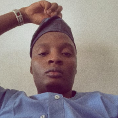

My Profile
Slack Name: ViccyAce
Current Time (UTC):
Current Day:
Slack Email: adeviccy@gmail.com
Goal 1: Master Front-end Development
I aim to become proficient in front-end technologies such as HTML, CSS, and JavaScript. Over the next two years, I plan to dive deep into frameworks like React and Vue.js. My goal is to build dynamic and responsive web applications that provide a seamless user experience. Additionally, I will focus on learning advanced CSS techniques and ensuring accessibility in my designs.
Goal 2: Learn Back-end Development
I plan to dive into back-end development, focusing on Node.js, Express, and databases like MongoDB and PostgreSQL. Understanding server-side programming and database management will enable me to create full-stack applications. I also intend to learn about RESTful API design and integrate it with front-end frameworks to build comprehensive web solutions. Security practices and optimizing performance will be key areas of study as well.
Goal 3: Contribute to Open Source
I aspire to contribute to open-source projects to give back to the community and improve my coding skills. By participating in open-source, I will collaborate with other developers, learn best practices, and contribute to meaningful projects. This experience will also help me build a strong portfolio and network with professionals in the industry. I plan to start by identifying projects that align with my interests and gradually take on more complex tasks.
Goal 4: Develop Soft Skills
I will work on enhancing my communication, teamwork, and problem-solving skills to become a well-rounded developer. Effective communication is essential for collaborating with team members and stakeholders. I also aim to improve my time management and project planning abilities to handle multiple tasks efficiently. Participating in team projects, attending workshops, and seeking feedback will be integral to my growth in these areas.